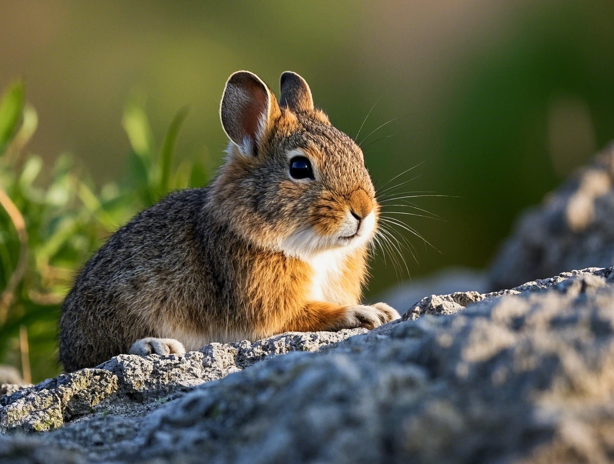
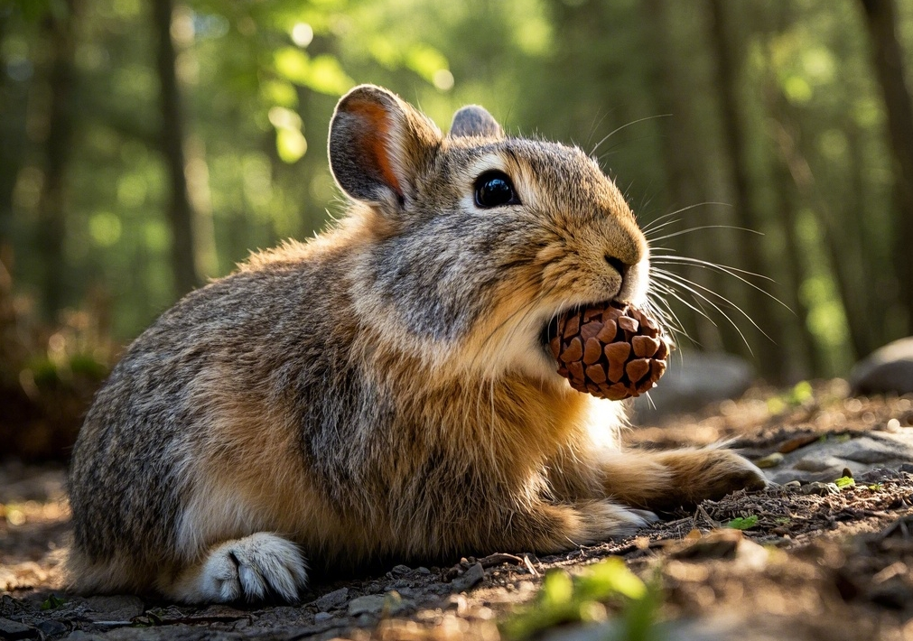
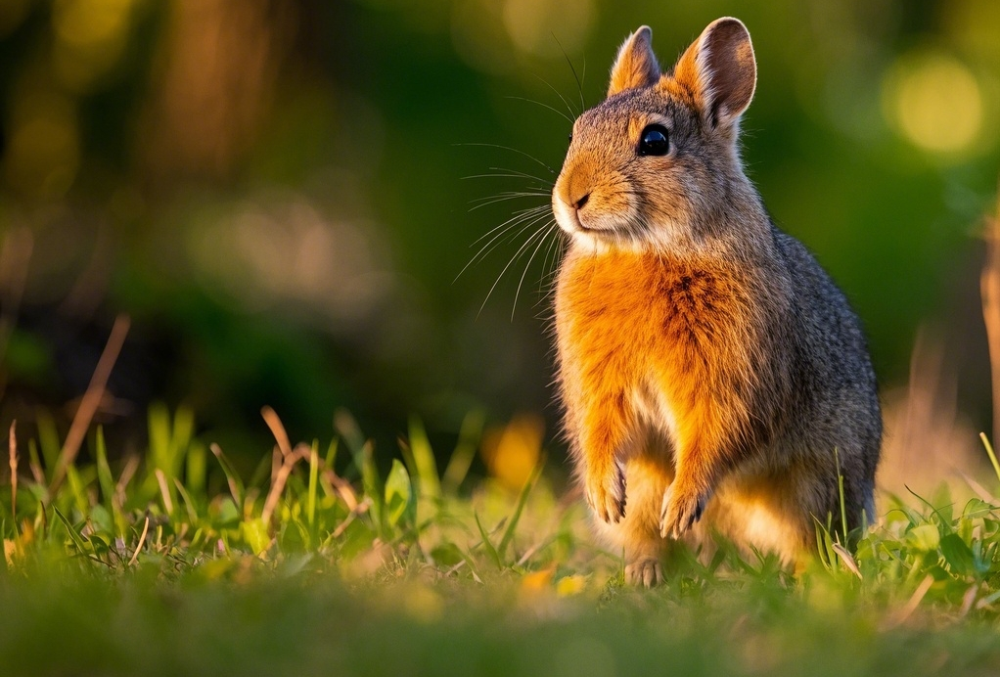

简介
伊犁鼠兔（学名：Ochotona iliensis），是一种体型娇小的山地哺乳动物，属于兔形目鼠兔科。它是中国新疆特有的物种，也是世界上最濒危的动物之一。伊犁鼠兔外形十分可爱，耳朵大大的，毛色呈灰棕色，带有一些白色的斑点，它们的身体紧凑，四肢短小，尾巴也很短。伊犁鼠兔是典型的植食性动物，主要以高山植物为食。
栖息地
伊犁鼠兔主要栖息在中国新疆伊犁地区的天山山脉。它们喜欢生活在海拔2800至4100米的高山岩石地带，这里气候寒冷，环境恶劣，但有着丰富的高山植物资源，为伊犁鼠兔提供了食物来源。这些岩石区域有许多裂缝和洞穴，为它们提供了良好的藏身之所和繁殖场所。然而，由于人类活动的影响，如畜牧业的发展、旅游开发等，伊犁鼠兔的栖息地受到了严重的破坏和分割，使其生存空间不断缩小。
饮食
伊犁鼠兔以多种高山植物为食，包括嵩草、苔草、雪莲等。它们会在夏季储存足够的食物，以备冬季食用。由于高山环境中食物资源相对匮乏，伊犁鼠兔需要花费大量时间觅食。它们通常在清晨和傍晚活动，避开白天的高温和天敌。伊犁鼠兔具有特殊的消化系统，能够适应高纤维的植物性食物，有效地从这些食物中获取营养。
保护
由于栖息地破坏、气候变化以及人类活动的干扰，伊犁鼠兔的数量急剧减少，被列为濒危物种。中国政府和相关保护组织采取了一系列措施来保护伊犁鼠兔及其栖息地。建立了多个自然保护区，加强对栖息地的保护和管理，限制人类活动的干扰。同时，开展科学研究，监测伊犁鼠兔的种群数量和分布范围，以便及时采取有效的保护措施。此外，通过宣传教育活动，提高公众对伊犁鼠兔保护的意识，呼吁更多人参与到保护行动中来。
